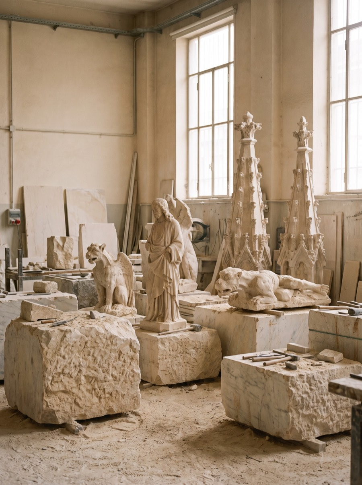
A Milanese way to say “never”
Milanese have a saying — “lungo come la fabbrica del Duomo,” as long as the building of the Duomo — for anything that drags on forever.
This is not just a cathedral. It’s a story of obsession, engineering and power — a building raised over almost six hundred years that reshaped an entire city. To carry marble down from the Alps, canals were cut across half of Lombardy. Napoleon crowned himself here. An 18th-century solar meridian still keeps time on its floor. And, officially, the Duomo has never been finished.

Milanese have a saying — “lungo come la fabbrica del Duomo,” as long as the building of the Duomo — for anything that drags on forever.
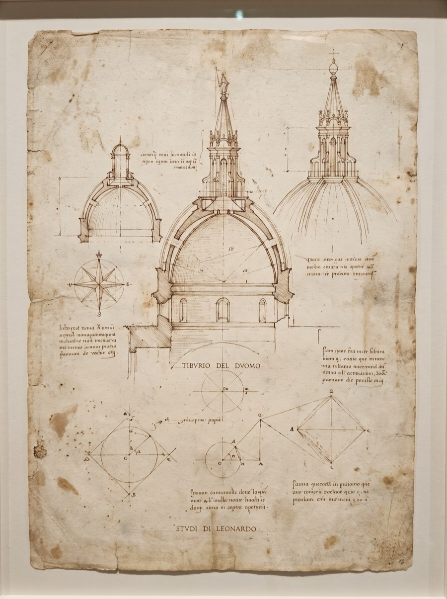
Leonardo da Vinci submitted a design for the cathedral’s central spire in 1487 — and, like many, was ultimately turned down.
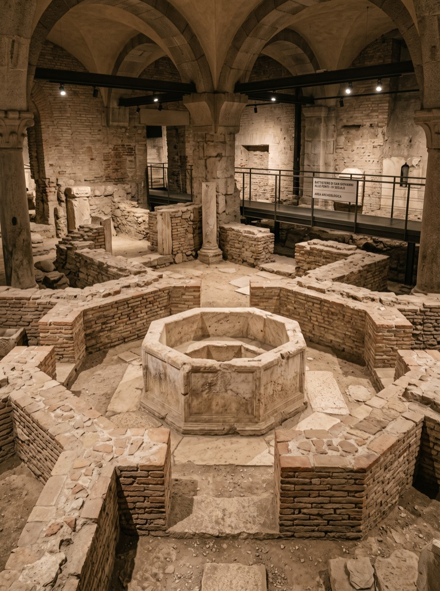
Beneath the floor lie the remains of Santa Tecla and the 4th-century baptistery where, tradition says, Saint Ambrose baptised Saint Augustine.
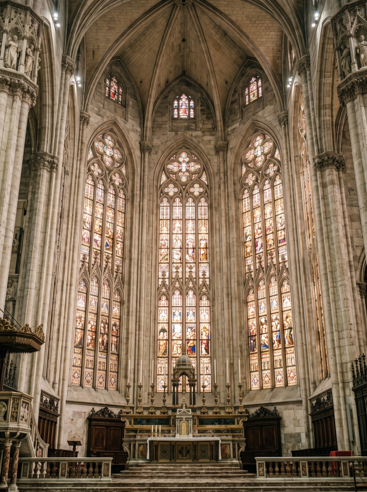
The Duomo’s stained-glass windows are among the largest in the world, some panels rising over 20 metres from floor to tracery.
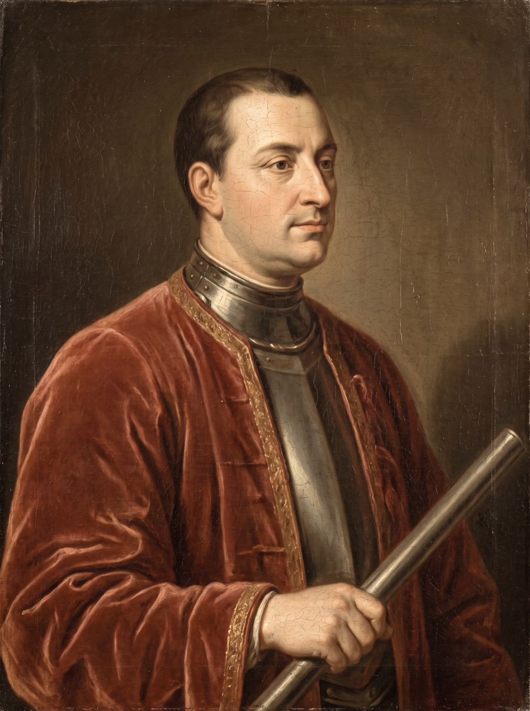
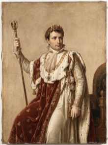
There is no single author. Dozens of masters shaped the Duomo across six hundred years.
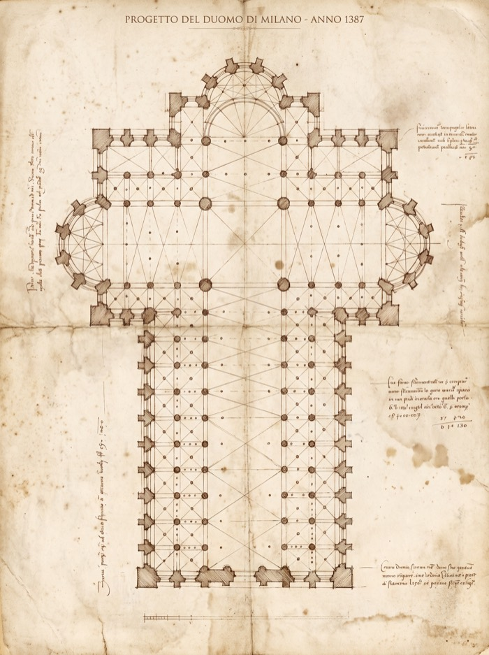
The first design of the cathedral — Milan, 1387.
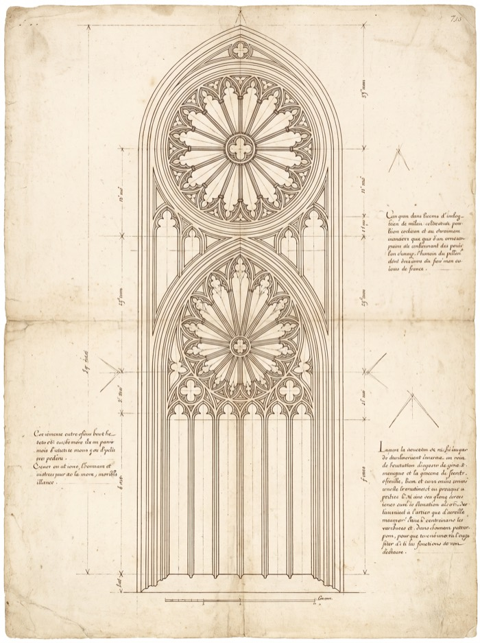
In 1389 the Frenchman brought the rayonnant Gothic; then Jean Mignot of Paris, and a long line of engineers.
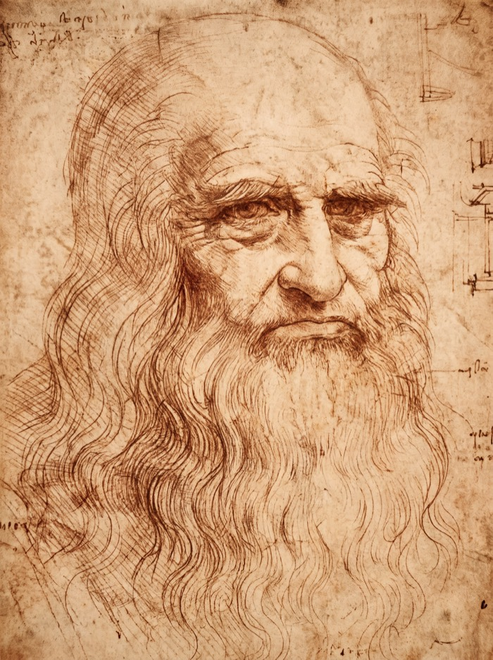
In the 1480s he joined the dispute over the crossing tower — the tiburio. His designs were never built.
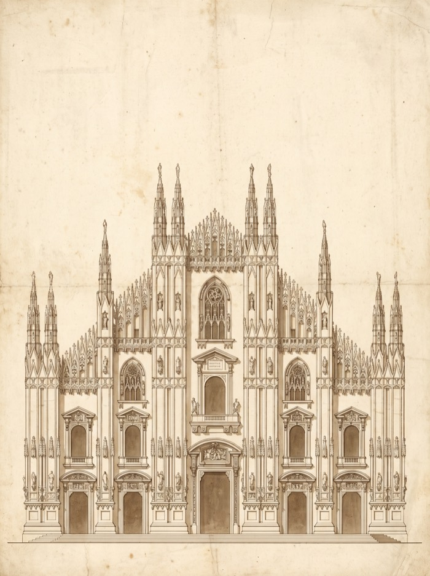
The façade — Carlo Amati and Giuseppe Zanoia.
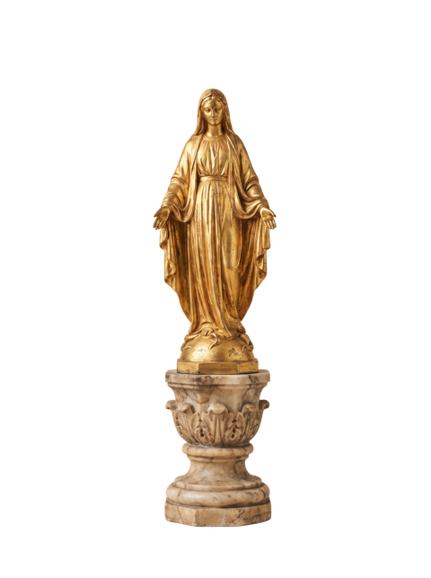
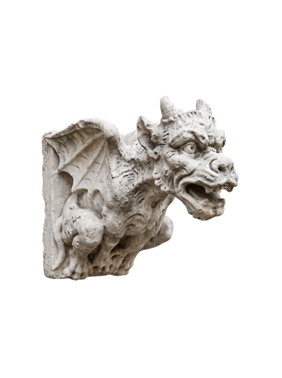
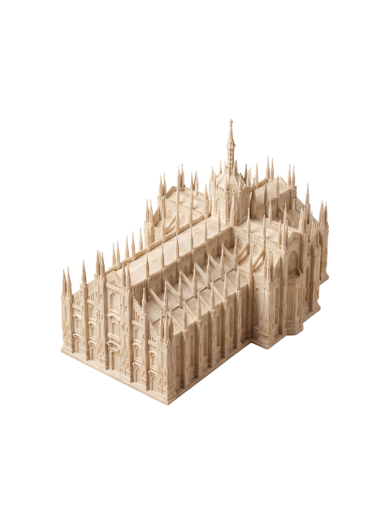
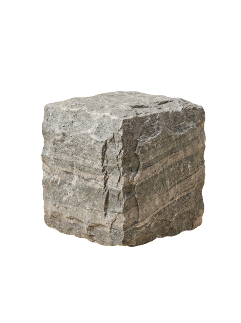